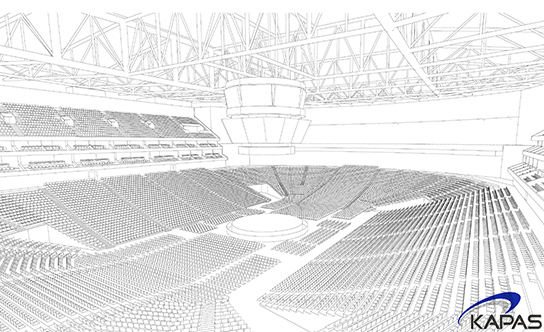

Arenas
KAPAS offers a comprehensive range of services related to arena feasibilty, development, and operations.

- 
-
사업타당성검토
카파스는 아레나 설립을 위한 타당성 검토 자문을 제공하고 있습니다.
검토 보고서는 국내 수요분석, 아레나 규모 및 좌석 배치 구성, 장비 구성 및 미래현금흐름에 대한 분석 내용을 포함합니다. -
프로젝트 개발/관리
카파스는 아레나 설립을 위한 부지분석, 기반시설계획, 사업비용 산정, 일정 수립 및 최적의 수익 모델을 제안해 드립니다.
또한 카파스는 세계적인 아레나 설계사들과 함께 프로젝트를 진행한 바 있으며 최상 수준의 랜드마크 아레나 설계를 위해 건축가들에게 자유로운 작업 환경을 조성해 주는 것을 중요시 하고 있습니다. -
운영
아레나의 성공을 위해서는 실질적인 시설운영도 중요하지만, 다양한 콘텐츠를 기획하여 운영하는 것 또한 중요합니다.
때문에 카파스는 부동산과 엔터테인먼트 분야에서 경험을 보유하고 있는 전문가들로 팀을 구성하여 아레나를 성공적으로 건립하고 운영할 수 있는 노하우와 서비스를 제공하고 있습니다.
"대한민국이 오랫동안 기다려온 국제적 수준의 실내공연장(18,000석 규모)이 일산 한류월드에 최초로 건립됩니다."
- 타당성 검토 및 재무분석
-
개발 및 운영 관련 협약서 작성 자문
– 투자자, 시공사, 정부 및 대출기관등 사업 관련 당사자간의 협약서 작성 지원
- 부지분석 및 기반시설계획
- 프로젝트 비용 산정 및 일정 수립
-
Facility Program
– 시설 용도 및 사용 계획 수립
-
Revenue Integration
– 명칭권, 스폰서쉽, 단체관람실, 식음료 매장 구성 및 티켓 판매 전략
-
디자인
– 계획설계 (Schematic Design), 기본설계 (Development Design), 실시설계 (Construction Document), 가구, 비품 및 장비 (FF&E) 파악 및 결정
-
시공 전 서비스
– 사업비용 산출 / 사업일정 수립, Building Information Model (BIM) 분석, Value Engineering, 최대 공사비 상한 보증액 (Guaranteed Maximum Price) 계약 구조 수립
-
개발 및 시공 관리
– 시공 일정 모니터링 및 예산 준수 확인등
- 아레나 운영 및 관리